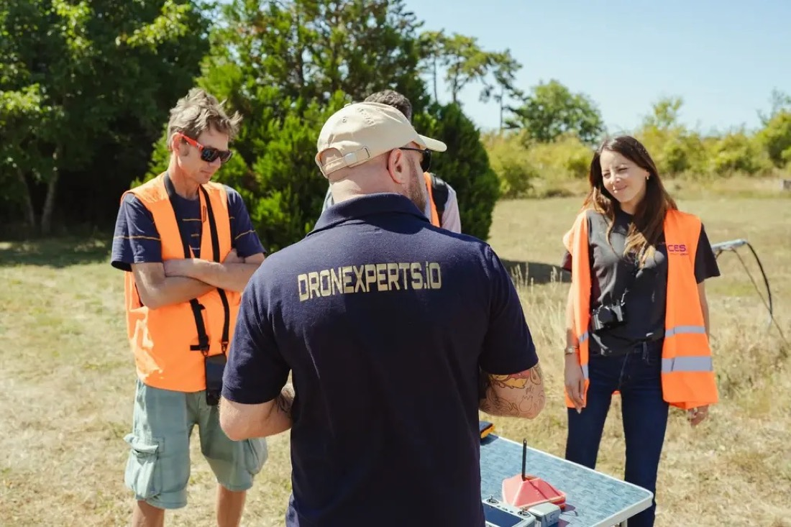
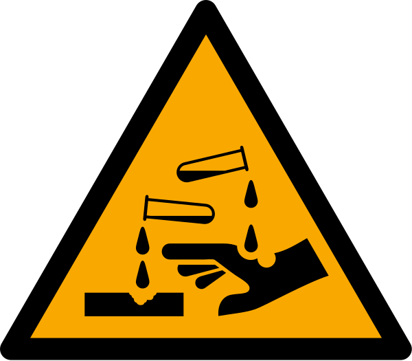

Le matin est consacré à la mise en pratique sur le terrain (selon la météo) ; l'après-midi aux modules entreprise et à la clôture.
Module 1
Mise en pratique
Briefing terrain, mise en place du captif, application sur une surface d'entraînement, rinçage et remise en état.
Briefing terrain
Rôles
Télépilote : vol et pulvérisation
Assistant au sol : pompe, tuyau, lien captif
Observateur : zone contrôlée, tiers, espace aérien
Phraséologie convenue avant le vol
Zone & sécurité
Point de fixation et rayon accroche + 5 m balisés
Zone de préparation des produits sur bâche
EPI, eau claire, rince-œil, absorbant
Fiche réflexe affichée
GO / NO-GO
Vent et pluie dans les limites du constructeur
Zone contrôlée libre de tiers
Drone, circuit et identification à distance vérifiés
Un seul « non » = pas de vol

Briefing sur le terrain avant les vols — formation Dronexperts
Les trois ateliers
1 Mise en place
Ancrer le point de fixation
Dérouler tuyau et lien captif sans boucle ni écrasement
Monter la rampe adaptée, vérifier les fixations
Amorcer la pompe, chercher les fuites
Test de pulvérisation au sol à l'eau claire
2 Application
Décollage, montée à la hauteur de travail
Approche lente de la surface
Passages réguliers, recouvrement entre bandes
Surveillance du tuyau et de la dérive
Arrêt pompe, éloignement, atterrissage
3 Remise en état
Rinçage du circuit à l'eau claire
Démontage et nettoyage des buses et filtres
Inspection du tuyau et du lien captif
Nettoyage du drone, batteries retirées
Remplissage de la fiche de chantier
Grille d'évaluation pratique
Critère
Niveau
Acquis
En cours
Non acquis
Briefing et GO / NO-GO argumenté
Critique
☐
—
☐
Zone contrôlée correctement dimensionnée et balisée
Critique
☐
—
☐
Mise en place du captif et test du circuit sans fuite
Important
☐
☐
☐
Vol stable à proximité de la surface, distance maintenue
Critique
☐
—
☐
Régularité de l'application et recouvrement
Standard
☐
☐
☐
Maîtrise de la dérive et du ruissellement
Important
☐
☐
☐
Communication avec l'assistant et l'observateur
Standard
☐
☐
☐
Rinçage, remise en état et fiche de chantier
Standard
☐
☐
☐
Un critère « critique » non acquis entraîne la reprise de l'atelier.
Module 2
Chiffrage & devis
Construire son prix, rédiger un devis conforme et appliquer le bon taux de TVA.
Construire son prix
Produit
+
Temps
+
Démarches
+
Déplacement
+
Usure & amortissement
+
Assurances
+
Marge
=
Prix
Les postes à chiffrer
Surface réelle (m², pente, débords) et nature du support
Produit : dose en L/m² de la fiche technique × surface
Temps : visite, balisage, protection, vol, rinçage
Démarches (préfecture, mairie) et déplacement
Les coûts cachés
Amortissement du drone, des batteries, des accessoires
Pièces d'usure : buses, hélices, tuyau
Assurances, formations et certificats (CATS, Certibiocide)
Jours non volables (météo)
Repère de marché (méthode traditionnelle, TTC) : nettoyage + démoussage de toiture 25 à 35 €/m², avec hydrofuge 35 à 45 €/m². Aucune référence publique spécifique au drone.
Prix : La Maison Saint-Gobain, guide « Prix du nettoyage de toiture au m² » — à titre indicatif
Les mentions du devis
Mentions à faire figurer
Date et durée de validité
Nom du client et lieu d'exécution
Nature exacte des travaux
Décompte détaillé : prix unitaire, unité, quantité
Frais de déplacement
Totaux HT et TTC avec le taux de TVA
Devis gratuit ou payant · signature « Lu et approuvé »
Spécifique au drone
Produit utilisé (nom, type de produit biocide)
Conditions : report possible si météo défavorable
Délai lié à la déclaration préfecture
Engagements du client : accès, véhicules déplacés, voisins prévenus
Assurances de l'entreprise
Clause d'accord pour l'usage des photos
Devis signé chez le client (hors établissement) : ajouter l'information sur le droit de rétractation et son formulaire.
Arrêté du 24 janvier 2017 (devis des prestations de dépannage, réparation et entretien dans le bâtiment) · FFB
Un devis type, annoté
Devis type — exemple fictif, montants à compléter
Entreprise et références d'assurance
Date, numéro, durée de validité
Client et lieu d'exécution
Décompte détaillé : quantité, unité, prix unitaire, produit
Frais de déplacement
Totaux HT, TVA, TTC et taux appliqué
Mention TVA 10 % certifiée par le client
Conditions drone : météo, délai de déclaration, photos
Gratuit ou payant, « Lu et approuvé », signature
Arrêté du 24 janvier 2017 · CGI, art. 279-0 bis · Loi n° 2025-127 du 14 février 2025, art. 41
Quel taux de TVA ?
10 % Travaux d'entretien sur logement
Locaux d'habitation achevés depuis plus de 2 ans
Résidence principale ou secondaire
Démoussage, nettoyage de toiture, ravalement, nettoyage de façade
Le client certifie les conditions par une mention signée sur le devis (ou la facture)
20 % Les autres cas
Locaux professionnels ou industriels
Logement achevé depuis moins de 2 ans
Panneaux solaires sur un bâtiment non résidentiel
Depuis 2025, l'attestation papier (formulaires 1300-SD / 1301-SD) est remplacée par une mention certifiée et signée par le client sur le devis. Le client la conserve jusqu'au 31 décembre de la 5e année.
CGI, art. 279-0 bis · Loi n° 2025-127 du 14 février 2025, art. 41 · CAPEB, KPMG Avocats
Documenter chaque chantier pour se protéger en cas de litige et valoriser son travail, dans le respect de la vie privée.
Le protocole avant / après
Avant
Constat d'état : tuiles cassées, fissures, gouttières
Abords : véhicules, façades voisines, jardin
Vues d'ensemble + détails
Photos jointes au devis ou au dossier
Comment
Même angle, même hauteur, même cadrage
Lumière comparable
Horodatage et géolocalisation conservés
Classement par chantier et par date
Après
Fin d'intervention : état des abords
Résultat différé : nouvelle série quelques semaines plus tard
Jointes au procès-verbal de fin de travaux
Une photo d'état initial protège l'entreprise : une tuile déjà cassée ou une toiture fragile ne doit pas être imputée à l'intervention.
Un avant / après qui se compare
Schéma de principe — même point de prise de vue, horodatage visible ; le résultat d'un traitement de toiture apparaît souvent après plusieurs semaines
Vie privée et usage commercial des photos
Pendant le chantier
Informer les personnes présentes et les voisins
Ne pas enregistrer d'images permettant d'identifier des personnes (visages, plaques) sans autorisation
Cadrer sur le bien traité, pas sur les jardins voisins
Prises de vue aériennes : vérifier les zones interdites à la captation
Pour votre communication
Accord écrit du client (clause dans le devis)
Flouter visages, plaques, voisins
Pas d'adresse ni d'élément localisant sans accord
Ne jamais diffuser ou vendre des images sans l'accord des personnes et des propriétaires
CNIL — « Où piloter son drone et quelles précautions en matière de vie privée » · Guide DSAC « Catégorie Spécifique », §6.1 et §6.2 · Règlement (UE) 2016/679 (RGPD)
Module 4
Assurance drone spécifique
La responsabilité de l'exploitant, les garanties à réunir pour une activité de pulvérisation et les pièges des contrats.
Une responsabilité de plein droit
Ce que dit la loi
L'exploitant d'un aéronef est responsable de plein droit des dommages causés au sol par l'aéronef ou par les objets qui s'en détachent
Seule la faute de la victime peut l'exonérer
Les gouttes de produit qui retombent sur une voiture = « objets qui se détachent » de l'aéronef
Et l'obligation d'assurance ?
Le règlement européen sur l'assurance des aéronefs exclut les aéronefs de moins de 20 kg
L'EASA renvoie au droit national
En pratique : assurance indispensable au vu de la responsabilité de plein droit…
Dommages causés par l'activité au sol · souvent une clause « aéronefs » qui exclut le drone : d'où l'intérêt d'un contrat qui couvre les deux
Dommages au drone
Casse, vol, incendie, perte de liaison
Extensions à négocier
Activité STS-01 · pulvérisation de produits · biens confiés (toiture, panneaux) · projections sur véhicules et façades · atteinte à l'environnement
Garantie décennale
En principe non pour du nettoyage / traitement (entretien) · peut le devenir si l'intervention touche à l'étanchéité
Faire écrire noir sur blanc dans le contrat : « pulvérisation de produits de traitement par drone ». Une RC drone standard ne couvre généralement pas cette activité.
Code civil, art. 1792 (décennale) · sources courtiers et assureurs spécialisés — à vérifier contrat par contrat
Pièges des contrats et attestations
Exclusions fréquentes
Télépilote non nommé au contrat
Drone déclaré « loisir » utilisé en mission rémunérée
Matériel non déclaré (nouveau drone, kit)
Vol hors du cadre déclaré (hors STS-01, de nuit sans dérogation)
Pollution non accidentelle
Franchises élevées ou en pourcentage
À fournir au client
Attestation RC aérienne et RC professionnelle en cours de validité
Mentionnant l'activité exercée
Attestation décennale le cas échéant
Références des assurances sur les devis et factures
Module 5
Entretien & maintenance
Obligations de l'exploitant, rinçage après chantier, corrosion, usure des pièces, hivernage et carnet d'entretien.
Ce que la réglementation impose
Maintenir le drone en état de voler en sécurité
Selon les instructions d'entretien du fabricant, reprises dans le MANEX.
Tenir des registres d'entretien
Conservés au moins 3 ans, présentables aux autorités.
Tenir la liste du personnel d'entretien
Qui est habilité à intervenir sur le drone et le système de pulvérisation.
Inspecter après chaque vol
Procédures après vol prévues par le MANEX (appendice 5).
Règlement (UE) 2019/947 — UAS.SPEC.050 1) g), i), k) et appendice 5, points 5) et 6) c) iv)
Après chaque chantier
Le circuit de pulvérisation
Faire passer de l'eau claire dans tout le circuit jusqu'aux buses, et répéter jusqu'à ce qu'il soit propre
Démonter et nettoyer buses, filtres et crépine
Rincer le tuyau et le lien captif, vérifier les raccords
Récupérer les eaux de rinçage (pas dans l'avaloir)
Le drone
Laisser refroidir, retirer les batteries
Rincer au jet doux — jamais au nettoyeur haute pression
Essuyer moteurs et hélices au chiffon humide puis sec
Sécher complètement avant rangement
Inscrire l'opération au carnet
Le Spray L est indice IP64 : protégé contre les projections d'eau, pas contre les jets puissants ni l'immersion.
Bonnes pratiques constructeurs de drones de pulvérisation (guide de démarrage DJI T55, guides revendeurs) · Fiche produit Aeotic (IP64) — suivre en priorité le manuel du Spray L
Le circuit à rincer, point par point
Schéma de principe — drone captif alimenté depuis le sol (cuve, crépine, pompe, tuyau, rampe)
Crépine et filtres : démonter, rincer, remplacer si colmatés
Pompe : faire circuler de l'eau claire, vérifier les raccords
Tuyau et lien captif : rincer, inspecter (écrasement, coupure)
Rampe et buses : démonter, nettoyer, contrôler le jet
Drone : batteries retirées, chiffon humide, jamais de haute pression
Eaux de rinçage récupérées, jamais dans l'avaloir.
La corrosion

Les causes
Résidus de produits alcalins (soude, potasse)
Produits chlorés (Javel : corrosif pour les métaux)


 Le circuit de pulvérisation
Le circuit de pulvérisation